一段被保存下来的合作史
这批新加入的资料来自一份独立的北大戏剧研究所旧网站备份。原站使用 PHP、Frame 和表格布局，保存了研究所简介、活动信息、大师工作坊、演出回顾、学习资源以及大量现场图片。
北京大学新闻网在 2005年4月12日 报道研究所正式成立，并明确写明研究所由北京大学艺术系与林兆华戏剧工作室联合成建，林兆华担任所长。北大同月另一篇报道还记录了4月10日戏剧论坛及研究所成立活动。
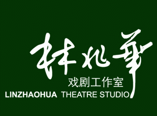
旧站身份
“北京大学戏剧研究所”是这份20年前网站备份中的正式站点名称。这里保留原站标识与视觉资料，作为数字档案的一部分。
研究所的办学设想
以下内容主要依据旧站“研究所简介”页面，并以北大新闻网2005年报道交叉核对。
从实践进入戏剧教育
旧站提出，研究所的方向以戏剧舞台艺术实践为主，侧重导演、表演与戏剧文学，并希望把理论教学融入排练和艺术实践，使教学过程与创作过程同步进行。
旧站同时提出编剧、导演、演员、舞台美术及灯光设计、戏剧评论等不同专业之间的合作，希望探索一种本土化的戏剧教育模式。
传统与新的舞台语言
旧站的办学方针写有“一方面尊重和学习传统，另一方面鼓励发展新的艺术观念和形式”。其长期目标包括讨论中西戏剧的融合可能，并尝试从中国戏曲表演传统与现代舞台实践之间寻找新的方法。
这些是2000年代研究所提出的目标，应作为历史文献阅读，而不是今天机构的现行招生或教学承诺。
2005：研究所成立与大师工作坊
时间线中的日期均来自北京大学新闻网等公开资料。
北京大学新闻网报道，戏剧教育家理查·谢克纳应林兆华邀请在北大讲学。林兆华在报道中将此次合作与戏剧教育改革联系起来。
北大新闻网记录，法兰西喜剧院原艺术总监雅克·拉萨勒为研究所学生排演马里沃《爱情游戏与巧合》，作为系列大师工作坊的重要项目。
北京大学新闻网在4月12日的报道中称，北大戏剧研究所正式成立，林兆华担任所长；研究所由北京大学艺术系与林兆华戏剧工作室联合成建。
北大新闻网4月报道提到，研究所计划于5月启动首期高等戏剧研究生课程进修班。这一时期的招生与培养安排属于历史资料，网站不再保留报名功能。
旧站影像档案
以下图片直接来自用户提供的旧网站备份；由于原始页面已使用旧式文件命名，无法对每张照片的拍摄者和具体日期做可靠确认，因此不添加未经证实的说明。
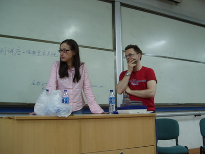
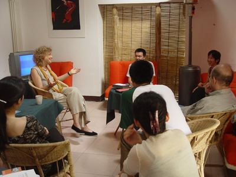
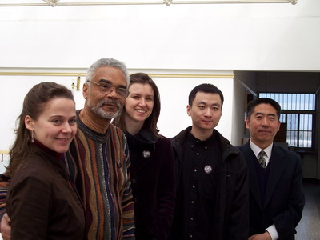
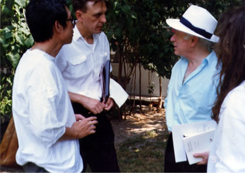
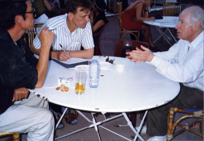
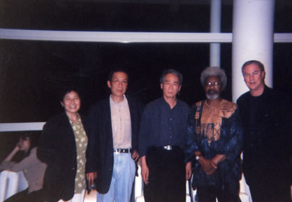
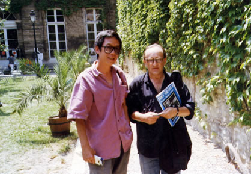
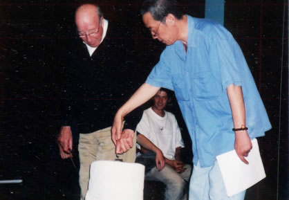
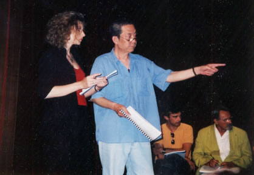
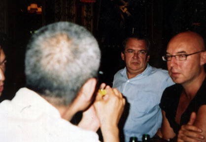
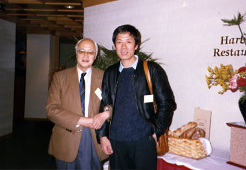
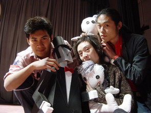
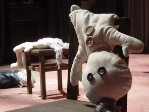
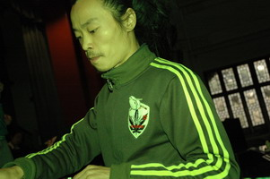
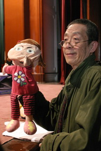

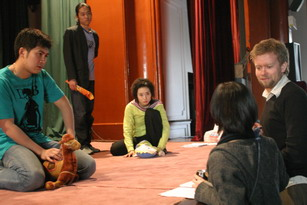


来源与核验
本页新增的历史背景优先采用北京大学新闻网等机构来源。
- 北京大学新闻网｜中外专家聚会北大戏剧论坛（2005-04-12） — 研究所正式成立、林兆华任所长、北大艺术系与林兆华戏剧工作室联合成建等信息。
- 北京大学新闻网｜林兆华发起 北大将办戏剧论坛（2005-04-06） — 研究所成立背景、办学方向、首期课程计划及大师工作坊信息。
- 北京大学新闻网｜美国戏剧教育家谢克纳应邀在北大讲学（2005-03-28） — 谢克纳来访及林兆华关于戏剧教育合作的公开表述。
- 北京大学新闻网｜北大戏剧研究所大师工作坊开讲（2005-03-21） — 雅克·拉萨勒及《爱情游戏与巧合》工作坊。